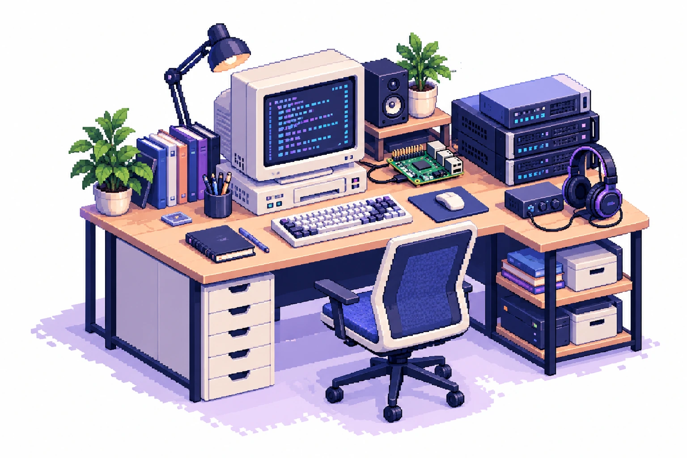

ENGENHARIA, CIÊNCIA & CURIOSIDADE
Gustavo
dos Reis.
AI Engineer Data Scientist Researcher
Transformo dados e boas perguntas em soluções de inteligência artificial. Entre pesquisa, código e experimentação, gosto de construir coisas que fazem sentido no mundo real.
Bacharel em Inteligência Artificial · UFG
REIS_LAB modo exploração

<ideias em construção />small computer, big ideas.No homelab, exploro arquiteturas, automação, segurança e MLOps com um Raspberry Pi 5. Um espaço para testar, entender e construir.